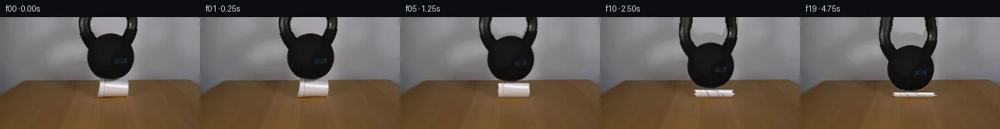

![首帧]()

Round 00
2026-11-05T10:47:23.484625+00:00像素候选变化代码 +342/−0inspection 更新
pixels 353ff99b31550fe2 · code 24ceaf66b822ae11
查看本轮 generate.py 真实 diff
--- previous/generate.py +++ current/generate.py @@ -0,0 +1,342 @@ +#!/usr/bin/env python3 +"""Generate a deterministic 20-frame physical continuation of first_frame.png. + +The source kettlebell is isolated from its local background and translated as a +rigid layer. The wall/table revealed by that translation are reconstructed +from the source's own surrounding pixels. The cup is a source-textured, +height-compressing mesh with analytic buckling/fold shading. +""" + +from pathlib import Path +import math + +import cv2 +import numpy as np +from PIL import Image, ImageDraw + +import artifact_io + + +ROOT = Path(__file__).resolve().parent +H, W = 144, 256 + + +def smoothstep(a, b, x): + q = np.clip((x - a) / (b - a), 0.0, 1.0) + return q * q * (3.0 - 2.0 * q) + + +def polynomial_wall(src): + """Fit the unobstructed wall with a smooth cubic illumination surface.""" + yy, xx = np.mgrid[0:H, 0:W] + valid = (yy <= 80) & ~((xx >= 88) & (xx <= 192)) + # Exclude a narrow ambiguous band at the wall/table boundary. + valid &= yy <= 78 + xn = (xx[valid] - W / 2) / (W / 2) + yn = (yy[valid] - 40) / 80 + A = np.column_stack([ + np.ones(xn.size), xn, yn, xn * xn, xn * yn, yn * yn, + xn * xn * xn, xn * xn * yn, + ]) + xa = (xx - W / 2) / (W / 2) + ya = (yy - 40) / 80 + B = np.stack([ + np.ones_like(xa), xa, ya, xa * xa, xa * ya, ya * ya, + xa * xa * xa, xa * xa * ya, + ], axis=-1) + out = np.empty_like(src, dtype=np.float32) + for c in range(3): + coef, *_ = np.linalg.lstsq(A, src[:, :, c][valid], rcond=None) + out[:, :, c] = B @ coef + + # The original wall is softly noisy. Reuse a small, deterministic residual + # from an unobstructed strip so the reconstructed patch is not unnaturally flat. + fit = np.clip(out, 0, 255) + residual = src.astype(np.float32) - fit + for y in range(0, 81): + for x in range(88, 193): + donor_x = 74 + ((x + 3 * y) % 13) + out[y, x] += 0.32 * residual[y, donor_x] + return np.clip(out, 0, 255) + + +def bell_alpha(src): + """Edge-aware mask for the body and the two visible handle branches.""" + yy, xx = np.mgrid[0:H, 0:W] + lum = src.astype(np.float32).mean(axis=2) + + # The body is approximately an ellipse; the intensity cue retains the true edge. + body_zone = ((xx - 141.2) / 34.0) ** 2 + ((yy - 50.2) / 30.7) ** 2 <= 1.10 + body_zone &= (yy >= 18) & (yy <= 81) + + # The top of the handle is outside the frame. These bands tightly bracket + # the two dark branches without swallowing the gray wall inside the handle. + left_handle = (yy <= 50) & (xx >= 96 + 0.20 * yy) & (xx <= 121 + 0.04 * yy) + right_handle = (yy <= 50) & (xx >= 155 - 0.03 * yy) & (xx <= 181 - 0.20 * yy) + handle_zone = left_handle | right_handle + + hard = ((body_zone & (lum < 106)) | (handle_zone & (lum < 94))).astype(np.uint8) + # Keep only components of useful size; fill small dark label interruptions. + n, labels, stats, _ = cv2.connectedComponentsWithStats(hard, 8) + keep = np.zeros_like(hard) + for i in range(1, n): + if stats[i, cv2.CC_STAT_AREA] > 25: + keep[labels == i] = 1 + keep = cv2.morphologyEx(keep, cv2.MORPH_CLOSE, np.ones((3, 3), np.uint8)) + + # One-pixel soft edge. Core source pixels remain completely unchanged. … diff truncated; 255 more lines …